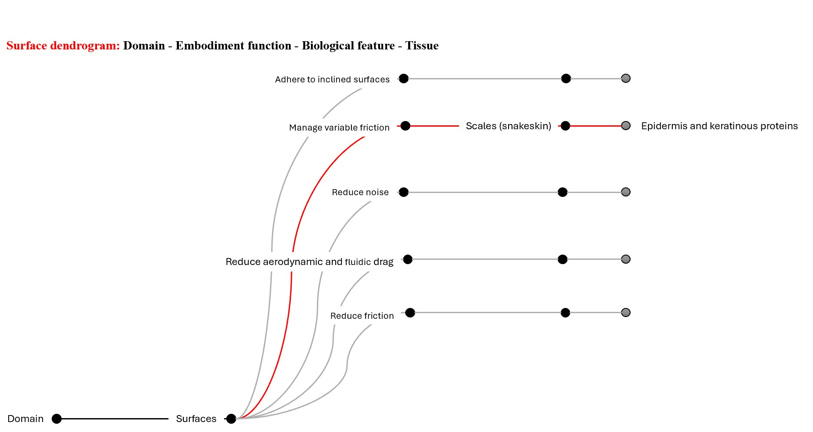
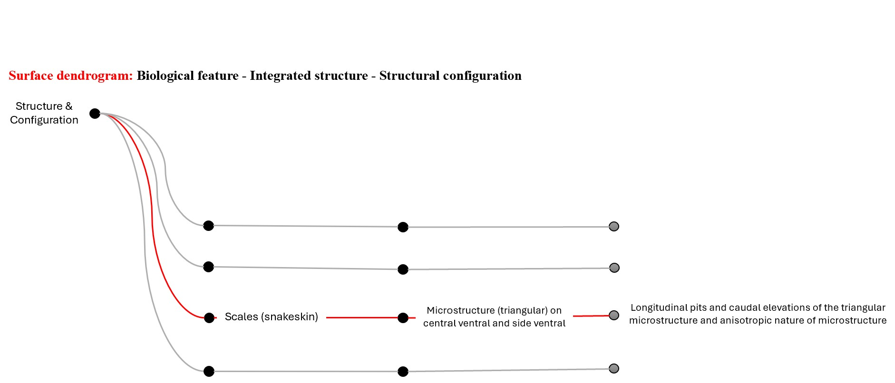
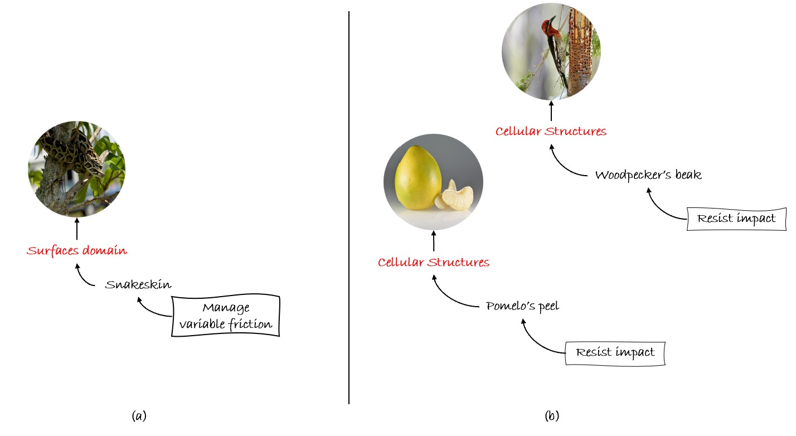
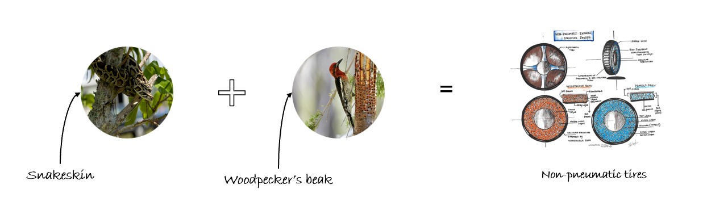

Example Walkthorugh
Problem Statement
Design a multifunctional non-pneumatic tire for space robotics or extreme-weather vehicles that: "Manages variable friction" and "Resists impact"
Step 1: Choosing relevant Domains
The initial selection of domains for integration is driven by two key factors: the designer's specific intention for the concept and the overarching requirements of the design problem at hand.
Step 2: Explore domain dendrograms
- Surfaces Domain
- Match the function “manage variable friction” with a biological feature. For example, Snakeskin texture has integrated structure i.e., triangular microstructures (scales), additional has a structural configuration: longitudinal pits, caudal elevation, and anisotropy of microstructures.  
- Cellular structures Domain
-
Match the function “resist impact” with a biological feature.
For example, Woodpecker's beak has integrated structure i.e., trabecular foam core sandwiched between hard outer shells
and has a structural configuration: variable porosities—outer (30%), middle (65%), inner (30%)


Step 3: Select features using meta-level design parameters
Multiple features may serve the same function. As shown in Figure 9, the Woodpecker's beak and the Pomelo peel exhibit "resist impact" function and belong to the Cellular structures domain. To choose between features that have the same geometric characteristic (domain) and exhibit the same function, quantitative parameters called meta-level design parameters were introduced and are listed in Table 4. To choose between alternatives, apply the design criterion:
- Criterion 1
- For any multifunctional application, if one of the multifunction is described as an anti-adsorption / absorption or repulsion or reduction, select the features with a lower total interaction area for combination.
- Criterion 2
- For any multifunctional application, if one of the multifunction can be described as adsorption/absorption or attraction, select the features with a higher interaction area for combination.
In the case of cellular structures choose the woodpeckers beak as it has a high interaction area and low porosity at the contact with the ground.
Note: These meta-level design parameters are just a starting point; we'll add more as the system evolves.
Qualitative parameters
Users can also incorporate additional qualitative criteria into their selections, such as the environmental context where the design will be applied. For instance, when designing a device for arid regions, users could choose to include biological adaptations specific to those environments
| Domain | Meta-level design parameters |
|---|---|
| Surfaces | Interaction area |
| Cellular Structures | Interction area and Porosity |
| Shapes | Scale |
| Cross-sections | Scale |
Step 4: Combine
Use a morphology matrix to combine.The Table 5 is an example of the morphology matrix that shows the possibilities of generating different concepts by integarting various morphologies. Figure 10 is a visual representation of the Concept-1, integrating the snakeskin and the woodpecker's beak.
| Function | Surfaces | Cellular structures | Shapes | Cross-sections |
|---|---|---|---|---|
| Manage variable friction | Snakeskin | -- | Dummy organism | -- |
| Resist impact | -- | woodpecker's beak | -- | -- |
Design Concepts:
Concept 1: Snakeskin + Woodpecker's beak
Concept 2: Dummy shape + Woodpecker's beak

Example Output: Non-pneumatic multifunctional bio-inspired tire design
The Figure 11 is a conceptual sketch of the multifunctional non-pneumatic tire design. The design integrates the surface features of snake skin for friction management and the internal structure of a woodpecker's beak for impact resistance. These tires are potentially suitable for use in high-terrain regions.

Read more about the multifuncitonal bio-inspired non-pneumatic tires here: Click link
Other Applications
Figure 12 presents a schematic of additional bio-inspired engineered conceptual designs developed through the MBID ideation system

(a) Painless sutures for Medical applications: Designed by integrating barbs on porcupine quill (surfaces)
and kingfisher's beak-rotational parabolic cross-section (cross-sections)
Click link
(b) Multifunctional skins for Marine applications: Designed by integrating Honeycomb pattern (cellular structure)
and shark skin (surfaces)
Click link
(c) Heat absorption for Aerospace applications: Designed by integrating camel nostrils (cross-sections)
and microbumbs of namib desert beetle (surfaces)
Click link